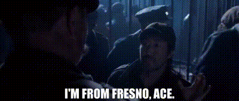
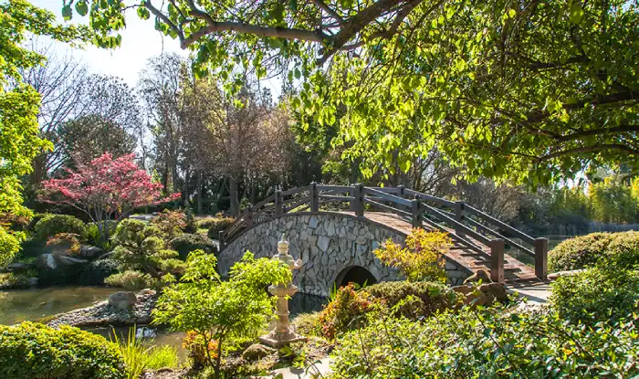
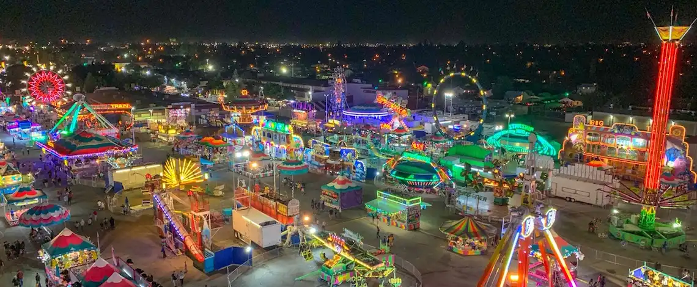
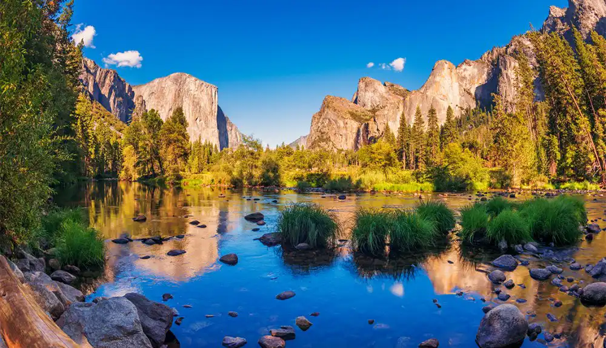
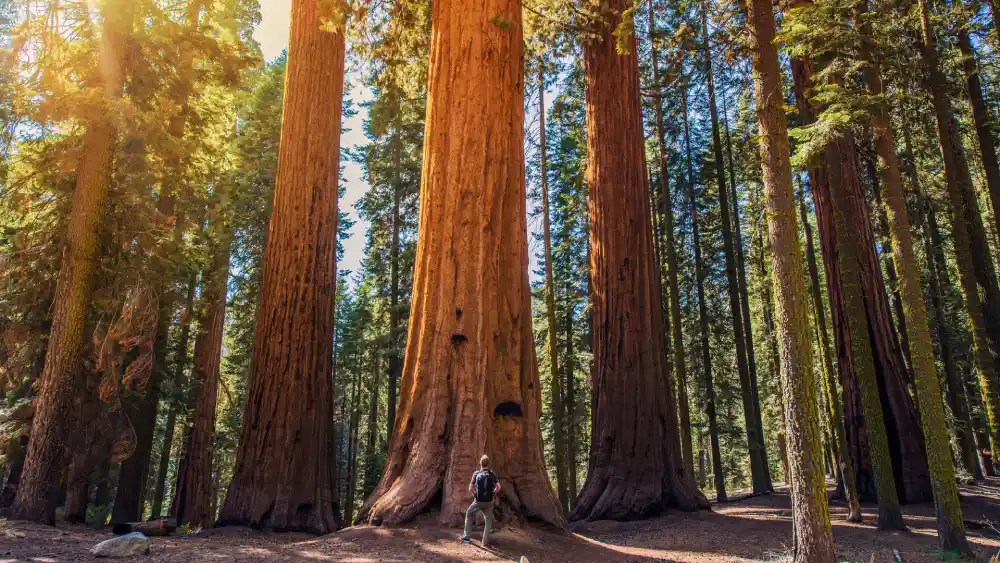

History
Fresno, California, located at the heart of California, traces its roots back to the late 19th century, initially flourishing as a vital railway center in the San Joaquin Valley. Over time, it evolved into a bustling cultural hub, shaped by its diverse agricultural landscape and entrepreneurial spirit. Today, Fresno stands as a testament to its rich history, blending modern amenities with a proud heritage deeply ingrained in its vibrant community.
Community Highlights
Explore Fresno's vibrant community highlights, from eclectic art galleries and lively farmers' markets to multicultural festivals celebrating its diverse population. With a thriving music scene and a rich tapestry of culinary delights, Fresno offers endless opportunities for cultural immersion and community connection. Whether strolling through historic neighborhoods or attending local events, visitors are sure to experience Fresno's warm hospitality and unique charm.
Save the Date
Fresno offers annual and seasonal attractions including the Big Fresno Fair, Christmas Tree Lane, water parks, and much more! Information can be found on their corresponding websites.
About Fresno
Fresno, California, founded in the late 19th century, boasts a diverse agricultural heritage. Attractions like the Fresno Chaffee Zoo, Shinzen Japanese Peace Garden, and Wild Waters Adventure Park draw visitors, while its proximity to Yosemite and Sequoia National Parks offers easy access to natural wonders. Fresno has been featured in movies such as Captain America: The First Avenger and Monsters Vs. Aliens.
Fresno Chaffee Zoo

Experience the wonder of wildlife up close at the Fresno Chaffee Zoo, where captivating animal encounters await amidst lush, immersive habitats.
Shinzen Japanese Peace Garden
Find tranquility at Fresno's Shinzen Japanese Peace Garden located near the Fresno Chaffee Zoo where serene ponds and manicured landscapes invite rejuvenation and reflection.
Wild Waters Adventure Park

Wild Waters Adventure Park: Dive into aquatic thrills with water slides, the Lazy River, and splash zones for family fun.
The Big Fresno Fair
Experience the Central Valley culture at the Big Fresno Fair where carnival rides, live entertainment, and delicious food unite for family fun. Ticket pricing and availability can be found on their website here.
Yosemite National Park
Yosemite National Park: Nature's masterpiece of towering cliffs, waterfalls, and ancient sequoias awaits outdoor enthusiasts.
Sequioa National Park
Explore Sequoia National Park's towering Redwood trees, scenic trails, and stunning vistas for an unforgettable wilderness adventure.